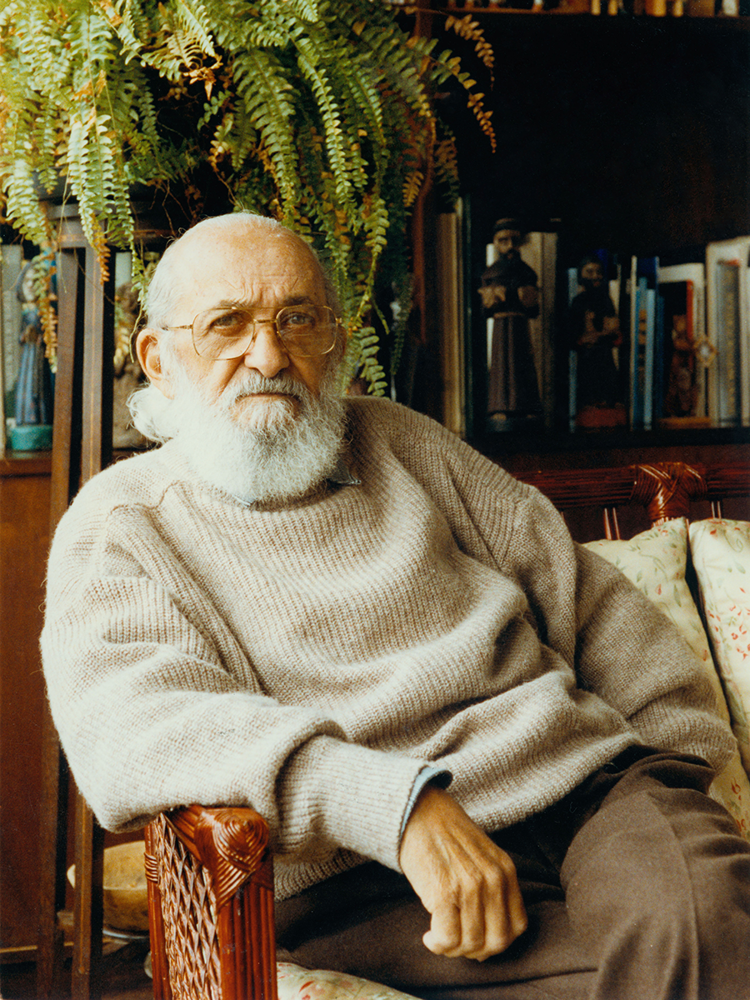

|  | Paulo Reglus Neves Freire (Recife, 19 de setembro de 1921 — São Paulo, 2 de maio de 1997) foi um educador,
pedagogo e filósofo brasileiro. É considerado um dos pensadores mais notáveis na história da pedagogia mundial, tendo influenciado o movimento chamado pedagogia crítica. É também o Patrono da Educação Brasileira. Freire entrou para a Universidade do Recife em 1943 para cursar a Faculdade de Direito, mas também se dedicou aos estudos de filosofia da linguagem. Apesar disso, nunca exerceu a profissão e preferiu trabalhar como professor numa escola de segundo grau, lecionando língua portuguesa. Em 1944, uniu-se em matrimônio com a colega de trabalho Elza Maia Costa de Oliveira, casamento este que durou até o ano de 1986, quando sua esposa acabou falecendo. Dois anos depois, em 1988, o educador casou-se com a também pernambucana Ana Maria Araújo, apelidada de “Nita”, que além de conhecida desde a infância, era sua orientada no programa de mestrado da Pontifícia Universidade Católica de São Paulo, onde foi professor. Ambas as esposas foram reconhecidas por Paulo como importantes em sua carreira, inclusive quando o educador dedicou seu título de Doutor Honoris Causa na PUC de São Paulo “à memória de uma e à vida da outra”. Em 1946, Freire foi indicado ao cargo de diretor do Departamento de Educação e Cultura do Serviço Social no Estado de Pernambuco, onde iniciou o trabalho com analfabetos pobres. Em 1961, tornou-se diretor do Departamento de Extensões Culturais da Universidade do Recife e, no mesmo ano, realizou junto com sua equipe as primeiras experiências de alfabetização popular que levariam à constituição do Método Paulo Freire. Seu grupo foi responsável pela alfabetização de 300 cortadores de cana em apenas 45 dias. Em resposta aos eficazes resultados, o governo brasileiro (que, sob o presidente Goulart, empenhava-se na realização das reformas) aprovou a multiplicação dessas primeiras experiências num Plano Nacional de Alfabetização, que previa a formação de educadores em massa e a rápida implantação de 20 mil núcleos (os “círculos de cultura”) pelo país. Em 1964, depois de implementar o Plano, o golpe militar extinguiu esse esforço. |
|
Freire foi encarcerado como traidor por
70 dias. Em seguida, passou por um breve exílio na Bolívia e trabalhou no Chile por cinco anos para o Movimento de Reforma Agrária da Democracia Cristã
e para a Organização das Nações Unidas para a Agricultura e a Alimentação. Em 1967, durante o exílio chileno, publicou no Brasil seu primeiro livro, Educação como Prática da Liberdade, baseado fundamentalmente na tese Educação e Atualidade Brasileira, com a qual concorrera, em 1959, à cadeira de História e Filosofia da Educação na Escola de Belas Artes da Universidade do Recife. Sua prática didática fundamentava-se na crença de que o educando assimilaria o objeto de estudo fazendo uso de uma prática dialética com a realidade, em contraposição à por ele denominada educação bancária, tecnicista e alienante: o educando criaria sua própria educação, fazendo ele próprio o caminho, e não seguindo um já previamente construído; libertando-se de chavões alienantes, o educando seguiria e criaria o rumo do seu aprendizado. Destacou-se por seu trabalho na área da educação popular, voltada tanto para a escolarização como para a formação da consciência política. Em 1991 foi fundado em São Paulo o Instituto Paulo Freire, para estender e elaborar as ideias de Freire. O instituto mantém até hoje os arquivos do educador, além de realizar numerosas atividades relacionadas com o legado do pensador e a atuação em temas da educação brasileira e mundial. Freire morreu de um ataque cardíaco em 2 de maio de 1997, às 6h53, no Hospital Albert Einstein, em São Paulo, devido a complicações em uma operação de desobstrução de artérias. O Estado Brasileiro, por meio do Ministério da Justiça, no Fórum Mundial de Educação Profissional de 2009, realizado em Brasília, fez o pedido de perdão post mortem à viúva e à família do educador, assumindo o pagamento de “reparação econômica”. Foi o brasileiro mais homenageado da história: ganhou 29 títulos de Doutor Honoris Causa de universidades da Europa e América; e recebeu diversos galardões como o prêmio da Unesco de Educação para a Paz em 1986. Em 13 de abril de 2012, foi sancionada a lei 12.612 que declara o educador Paulo Freire Patrono da Educação Brasileira. |